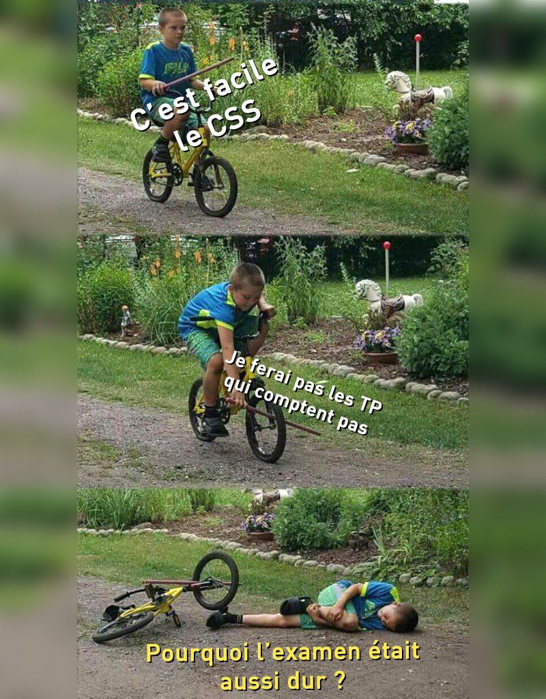
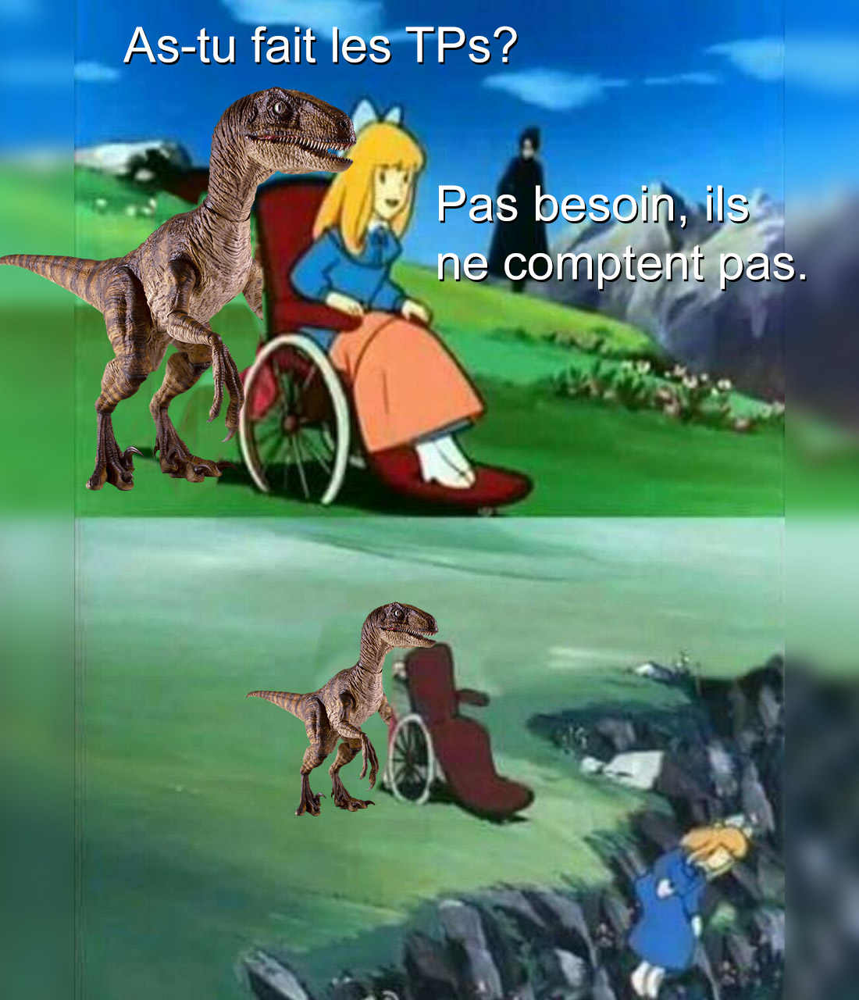
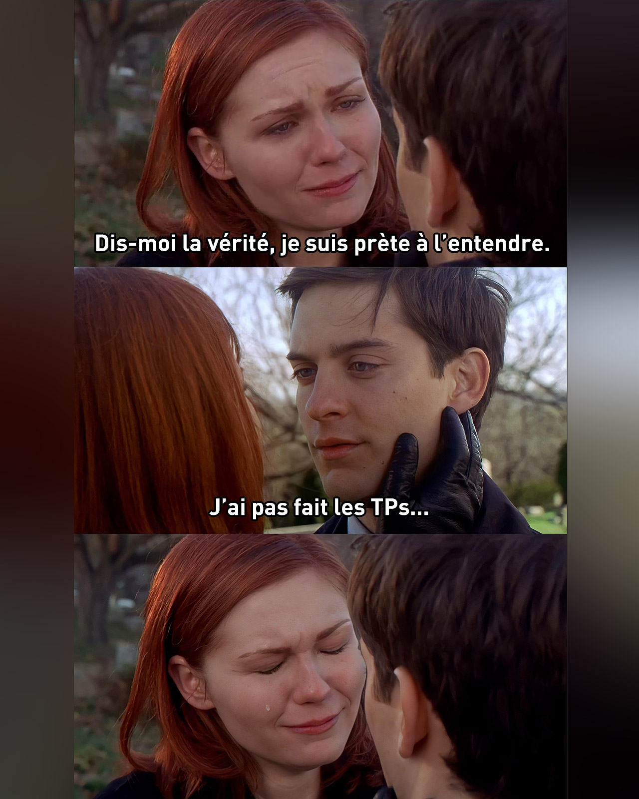

Flux
L’affichage de base des éléments dans une page
Display
block, inline, inline-block, none
Display - Celeste
Pour cet exercice, vous devrez complétez la carte de présentation de Madeline, l’héroine du jeu Celeste.
Position
static, relative, absolute, fixed, sticky
TP01 (formatif)
Weezer - Album bleu
Pour cet exercice, vous devez écrire du HTML et du CSS afin de recréer l’album bleu de Weezer.
Correction: Weezer - Blue Album
Width/Height - System32
Pour cet exercice, vous devez créer en HTML et CSS une page présentant une bande dessinée d’Andrew AKA system32comics.
Width/Height - Prévert
Pour cet exercice vous devrez en CSS compléter l’affichage du célèbre poème: Le cancre, du français Jacques Prévert.
Border-radius - Q-bitz
Pour cet exercice vous devez recréer un motif à partir de tuiles contenant des formes, comme dans le célèbre jeu de scociété Q-bitz.
Box-sizing - Illustrator
Pour cet exercice vous devez compléter une mise en page déjà entamée d’un écran de démarrage du logiciel Adobe Illustrator.
Float
Permet à un élément de flotter à gauche ou à droite
Float - Rupi Kaur
Pour cet exercice vous devrez mettre en forme un poème de Rupi Kaur: une poétesse, écrivaine et féministe canadienne, née en Inde.
TP02 (formatif)
Queen - Hot Space
Pour cet exercice, vous devez écrire du HTML et du CSS afin de recréer l’album Hot Space de Queen en utilisant notamment la propriété position.
Correction: Queen - Hot Space
Pseudo-classes - Cercles
Pour cet exercice, vous devez altérer l’apparence de chaque carré et de leur contenu en fonction du survole de la souris
Pseudo-classes - Bouton
Pour cet exercice, vous devez utiliser les pseudo-classes afin de modifier l’apparence d’un bouton selon différentes conditions.
Pseudo-classes - Grille
Pour cet exercice, vous devrez à l’aide de pseudo-classes sélectionner les cases adéquates dans une grille afin de reproduire différentes mises en page.
Background - Candy Crush
Pour cet exercice, vous devrez recréer des mises en page inspirées du jeux Candy Crush en mettant à profit vos connaissances sur la propriété CSS background.
TP03 (5%)
Moby - I Like to Score
Pour cet exercice, vous devez écrire du CSS afin de recréer l’album "I Like to Score" de Moby.
Font
color, family, weight, size, style, line-height
Text
align, decoration, transform, stroke, shadow
Text - Focus
Pour cet exercice, vous devez manipuler les propriétés de texte en CSS afin de recréer un effet typographique.
Google Fonts - Bart
Pour cet exercice, vous devez recréer une scène de générique d’introduction de l’épisode 18 de la saison 28 des Simpsons.
@font-face - La guerre, la guerre
Pour cet exercice, vous devrez recréer en CSS une mise en page inspirée d’une murale thématique La guerre des tuques réalisée par l’artiste Marc Sirus.
Correction: Moby - I Like to Score
Spécificité
Chaque sélecteur en CSS se voit attribuer un pointage.
Spécificité CSS
Un quiz amusant pour apprendre et pratiquer la spécificité en CSS.
@font-face - La guerre, la guerre
Pour cet exercice, vous devrez recréer en CSS une mise en page inspirée d’une murale thématique La guerre des tuques réalisée par l’artiste Marc Sirus.
TP04 (formatif)
Mindless Self Indulgence - FGWSSS
Pour cet exercice, vous devez écrire du HTML et du CSS afin de recréer l’album "Frankenstein Girls Will Seem Strangely Sexy" de Mindless Self Indulgence.
Opacity
Gérer l'opacité d'un élément.
Z-index
Order d'apparition des éléments dans le flux
Z-index - Mains de Monstres
Pour cet exercice, vous devez recréer une scène où des monstres jouent au jeu d’enfants d’empilement des mains.
Overflow - Éclipses
Pour cet exercice, vous devez compléter une mise en page illustrant différents stades d’une éclipse solaire.
Box-shadow - Réseaux Sociaux
Pour cet exercice, vous devez compléter le CSS d’une barre de pastilles permettant d’accéder à divers réseaux sociaux.
TP Complémentaires (formatif)
Mindless Self Indulgence - FGWSSS
Pour cet exercice, vous devez écrire du HTML et du CSS afin de recréer l’album "Frankenstein Girls Will Seem Strangely Sexy" de Mindless Self Indulgence.
Examen: Les Guardiens de la Galaxie
Correction: Les Guardiens de la Galaxie
Media queries - M.O.D.O.K.
Pour cet exercice, vous devrez aider les personnages à se positionner adéquatement en fonction de la largeur de l’écran.
vw & vh - Marylène Gendron
Pour cet exercice, vous devez styliser un article concernant l’humoriste de la relève Marylène Gendron.
TP Complémentaire (formatif)
Correction: Mindless Self Indulgence
Correction: Band de Garage
SVG
Scalable Vector Graphics
SVG - Hollywood Boulevard
Pour cet exercice, vous devrez vous créer votre propre étoile ⭐️ sur le Hollywood Boulevard grace au pour de SVG.
Variables - Canadiens
Pour cet exercice, vous devrez incorporer des variables CSS dans un projet reproduisant en CSS le logo du club de hockey des Canadiens de Montréal.
TP05 (10%)
Correction: Journée Internationale des Droits des Femmes
Image
La balise <img> permet d'afficher une image
Picture
Définir plusieurs sources à une image
Picture - Ant-man
Pour cet exercice, vous devrez aider Ant-Man à maîtriser les particules de Pym afin d’ajuster sa taille en fonction de la largeur de l’écran.
Actions Photoshop - Kirby
Pour cet exercice, vous devez télécharger un dossier de départ et traiter plusieurs images à l’aide d’un script Photoshop.
TP Complémentaire (formatif)
Malajube - Trompe-l'œil
Pour cet exercice, vous devez écrire du HTML et du CSS afin de recréer l’album "Trompe-l'œil" du groupe québécois Malajube.
Modes de fusion - Émotion
Pour cet exercice vous devez ajuster une affiche à l’aide des modes de fusion en CSS afin de lui donner l’apparence recherchée.
Filtres
blur, contrast, grayscale, sepia, etc.
Filtres - Anonymat
Pour cet exercice, vous devez rendre une photo d’une personne anonyme grâce aux filtres CSS.
Filtres - Instagram
Pour cet exercice, vous devez recréer quelques-uns des filtres les plus populaires de la plateforme Instagram.
Pseudo-éléments - Zab Café
Pour cet exercice, vous devez compléter une page de blog du torréfacteur montréalais Zab Café ☕️ en la bonifiant avec des styles de liens riches.
TP06 (10%)
Nine Inch Nails - Broken
Pour cet exercice, vous devez écrire du CSS afin de recréer la pochette du mythique album industriel "Broken" de Nine Inch Nails.
Correction: Rage Against The Machine - Renegades
Object-fit - McDonald's
Pour cet exercice, vous allez devoir recréer différentes combinaisons de menu déjeuner chez McDonald’s.
Aspect-ratio
Créer un élément dont la dimension reste proportionnelle.
Aspect-ratio - The Boys
Pour cet exercice, vous devez réaliser une affiche publicitaire ayant pour thème la série The Boys d’Amazon Prime.
TP Complémentaire (formatif)
Correction: Malajube - Trompe l'oeil
Transformation - Formes
Pour cet exercice, vous allez devoir recréer des motifs pointillés en déplaçant des blocs de couleurs à l’aide de transformations CSS.
TP Complémentaire (formatif)
The Police - Synchronicity
Pour cet exercice, vous devez écrire du HTML et du CSS afin de recréer l’une des 36 pochettes de l’album Synchronicity du groupe The Police.
Correction: Nine Inch Nails - Broken
Animation
@keyframes, animation-name, animation-duration, etc.
Animation - Pong
Pour cet exercice vous devrez animer en CSS la balle d’un des premiers jeux vidéo d’arcade au monde, c’est-à-dire Pong!
Animation - Yo-yo
Pour cet exercice nous allons animer l’un des plus vieux jeu au monde, le Yo-yo!
TP07 (5%)
David Bowie - Earthling
Pour cet exercice, vous devez écrire du CSS afin de recréer l’album expérimental "Earthling" de David Bowie.
Correction: The Police - Synchronicity
Animation
@keyframes, animation-name, animation-duration, etc.
Animation - New Super Luigi
Pour cet excercice, vous devrez recréer une scène du chateau du niveau Frosted Glacier du jeu New Super Luigi sur la Wii U.
TP Complémentaire (formatif)
Emmet
Accélérateur de code
Inspecteur - Unlock!
Apprendre à utiliser efficacement l’outil d’inspecteur de son navigateur en jouant à un jeu Unlock!
Inspecteur - Urbania
Pour cet exercice, nous allons tester vos aptitudes avec l’inspecteur du navigateur en fous faisant “hacker”, le site d’Urbania.ca.
TP Complémentaire (formatif)
Alexisonfire - "Watch Out!"
Pour cet exercice, vous devez écrire du CSS afin de recréer l’album "Watch Out!" du groupe rock canadien Alexisonfire.
Correction: David Bowie - Earthling
Transition - Spider-Man
Pour cet exercice nous allons effectuer une transition sur le masque de Spider-Man afin de le faire passer d’un costume à un autre.
Transition - BoJack Horseman
Pour cet exercice nous allons animer les cartes présentant les personnages principaux de la série animée BoJack Horseman 🐴.
Transition - Boutons
Pour cet exercice nous allons indiquer quel bouton a le focus à l’aide de l’émoji ☝️.
Transition - Fantôme + Mario
Pour cet exercice nous allons récupérer l’animation du déplacement de fantôme 👻 réalisée dans un exercice précédent. Cependant, comme tout bon fantôme, celui-ci devra se figer lorsque Mario le regardera 👀
TP08 (5%)
Scroll-snap
scroll-snap-type, scroll-snap-align, scroll-padding
Scroll-snap - WhatIsAdam
Pour cet exercice, vous devrez réaliser un carrousel CSS mettant en valeur 12 œuvres de l’artiste québécois WhatIsAdam.
Masquage - Barbie Selfie
Pour cet exercice, vous devez écrire du CSS afin de recréer l'effet généré par le site web promotionel Barbie Selfie Generator.
TP Complémentaire (formatif)
Mr. Oizo - All Wet
Pour cet exercice, vous devez écrire du CSS afin de recréer la pochette de l’album "All Wet" de l'artiste multidisplinaire français Quentin Dupieux mieux connu sous le nom de Mr. Oizo.
Révision pour l'examen
Révision - Les Simpsons
Pour cet exercice nous allons reproduire une affiche publicitaire de Télétoon la nuit faisant la promotion de l’émission culte de Matt Groening - Les Simpsons.
Examen: Birds of Prey
Devoir: Vidéo Accessibilité 101
TP09 (5%)
Devoir: Vidéo Accessibilité 201
Checkbox - Menu Hamburger
Pour cet exercice nous allons créer une des options de navigation les plus populaires, le menu hamburger 🍔.
Radio - Dragonball
Pour cet exercice, nous allons modifier l’action performée par Goku, le personnage principal de Dragonball, en fonction du bouton radio sélectionné.
Select - Twitter
Pour cet exercice, vous devrez compléter le formulaire de Twitter demandant la date de naissance de son nouveau membre.
TP Complémentaire (formatif)
Underworld - Everything Everything
Pour cet exercice, vous devez écrire du CSS afin de recréer l’album "Everything Everything" du groupe de musique électronique Underworld.
The Black Keys - Turn Blue
Pour cet exercice, vous devez écrire du CSS afin de recréer la pochette de l’album "Turn Blue" du groupe rock The Black Keys.
Jeux uniquement en CSS
Room Escape
The Mine
Connect 4
Minesweeper
Formulaire - Among Us
Pour cet exercice nous allons créer un formulaire permettant de générer un personnage du célèbre jeu Among Us.
TP Complémentaire (formatif)
Death From Above 1979
Pour cet exercice, vous devrez écrire du HTML et du CSS afin de recréer une compilation des plus récents albums de Death From Above 1979.
AIR - Premiers Symptômes
Pour cet exercice, vous devez écrire du CSS afin de recréer la pochette de l’album "Premiers Symptômes" du groupe de musique électronique français Air.

Favicon - Mega Man
Pour cet exercice, vous devrez créer un fichier HTML affichant dans l’onglet de votre navigateur un favicon de Mega Man.
iFrame
youtube, vimeo, google map, etc.
iFrame - Turbo Kid
Pour cet exercice, vous devrez utiliser un iFrame afin de réaliser une page promotionnelle du film québécois Turbo Kid.
TP Complémentaire (formatif)
Lost Highway
Pour cet exercice, vous devez écrire du CSS afin de recréer la pochette de la bande sonore du film Lost Highway de David Lynch.
Animation Sprite Sheet - Skate
Dans le cadre de cet exercice, vous devez reproduire une animation créée par le studio Lobster mettant en vedette un personnage en train de faire du skate 🛹.
TP Complémentaire (formatif)
Tool - Ænema
Pour cet exercice, vous devez écrire du HTML et du CSS afin de recréer la pochette lenticulaire de l’album "Ænema" du groupe Tool.

Outline
border, width, style, color
Outline - Skittles
Pour cet exercice vous devez attribuer aux différents Skittles un outline lorsqu’ils reçoivent le focus.
Microdonnées - CF Montréal
Pour cet exercice, vous devrez aider l’équipe marketing de La Presse à améliorer le référencement d’un article à propos du Club de Foot Montréal ⚽️.
TP Complémentaire (formatif)
TTC - 3615
Pour cet exercice, vous devez écrire du CSS afin de recréer la pochette de l’album "3615" du groupe rap français TTC.
Nirvana - Nevermind
Pour cet exercice, vous devez écrire du CSS afin de recréer la pochette de l’album "Nevermind" du mythique groupe grunge Nirvana.

TP Complémentaire (formatif)
Trainspotting
Pour cet exercice, vous devez écrire du CSS afin de recréer la pochette de la bande sonore du film Trainspotting de Danny Boyle.
Harmonium - L'Heptade
Pour cet exercice, vous devez écrire du CSS afin de recréer la pochette de l’album "L'Heptade" du mythique groupe québécois Harmonium.
Lisa LeBlanc - Lisa LeBlanc
Pour cet exercice, vous devez écrire du CSS afin de recréer la pochette de l’album éponyme de Lisa LeBlanc.
Robert Charlebois - La maudite tournée
Pour cet exercice, vous devez écrire du CSS afin de recréer la pochette de l’album live "La maudite tournée" du célèbre chanteur québécois Robert Charlebois.
Bonus
Révision - South Park
Pour cet exercice, nous allons recréer une affiche animée de la populaire série d’animation South Park.
Aperçu de l'examen final
Examen final: Loup de nuit